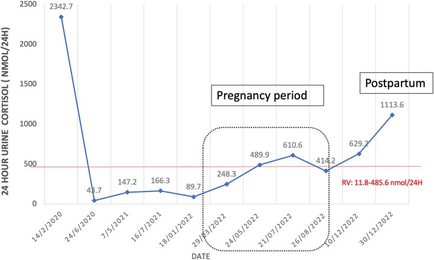
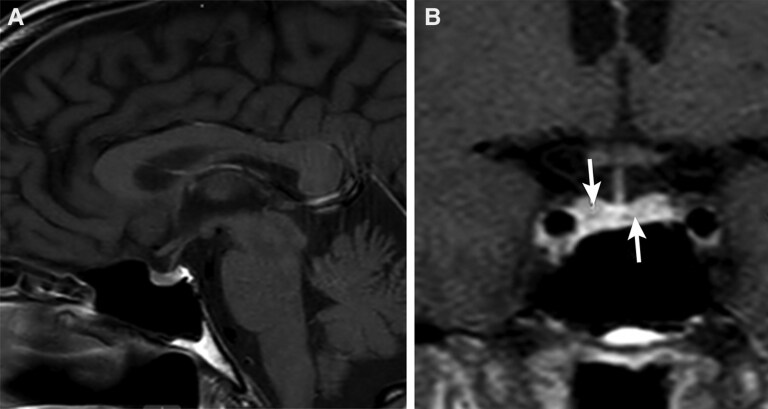
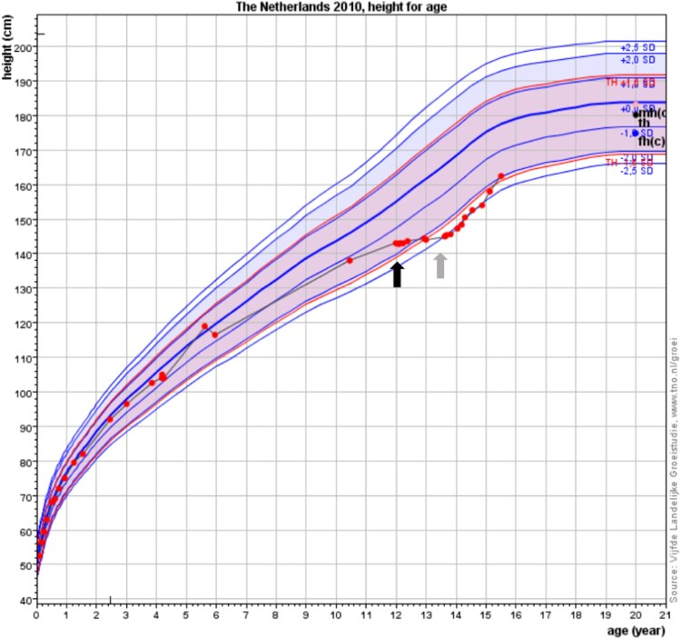

1700 — Hội chứng Cushing chu kỳ: cortisol dao động, xét nghiệm âm giả và bẫy "chụp đúng lúc trũng" / Cyclic Cushing syndrome
Tags: pattern:cushing pattern:cushing-chu-ky pattern:microadenoma-tuyen-yen pattern:khong-khoi vung:tuyen-yen vung:thuong-than protocol:UFC-24h-lap-lai protocol:BIPSS
Mức chắc chắn (certainty): tổng hợp y văn (literature synthesis) — 4 ca nguyên văn có ảnh (PMC11986810: UFC 2.342,7 → 48,7 nmol/24h rồi tái phát sau sinh; PMC12559019: 3 ca thể "square wave"; PMC13402041: trẻ 12 tuổi chẩn đoán bằng cortisol tóc; PMC13613223: IPSS âm khi đang eucortisolemia) + bài nền 1696/1699.
Câu chốt: Cushing chu kỳ không phải một bệnh riêng mà là một kiểu diễn tiến của mọi nguyên nhân Cushing, gặp ở 8–19% ca. Sai lầm chết người không nằm ở chẩn đoán hình ảnh mà ở thời điểm: chụp MRI, làm BIPSS hay PET trong pha cortisol bình thường sẽ cho kết quả âm giả, và bệnh nhân bị gắn nhãn sai (thường là "ACTH lạc chỗ không rõ nguồn") rồi bị cắt thượng thận hai bên hoặc mổ tuyến yên mò. Tiêu chuẩn tối thiểu phải nhớ: 3 đỉnh + 2 đáy (hoặc 2 đỉnh + 1 đáy) cortisol.
1. Tổng quan bệnh học – cơ chế hình ảnh
- Định nghĩa: các đợt tăng cortisol (đỉnh) xen kẽ các giai đoạn cortisol bình thường hoặc thấp (đáy), có hoặc không có chu kỳ đều. Đỉnh kéo dài vài giờ đến vài tháng; pha xen kẽ vài ngày đến vài tháng, có ca 10–26 tháng ("square wave").
- Tần suất (số phải nhớ): 8–19% bệnh nhân Cushing; 14–18% tùy tiêu chuẩn chẩn đoán; khoảng 15% ở người lớn, và có tác giả cho rằng dấu hiệu chu kỳ có thể gặp tới 70% nếu lấy mẫu đủ dày. Nguyên nhân: tuyến yên 67%, lạc chỗ 17%, thượng thận 11%.
- Ở trẻ: cực hiếm — tới 2026 chỉ 6 ca được báo cáo (2 nam/4 nữ, 3–15 tuổi), 5/6 là Cushing do tuyến yên, 1 ca là tăng sản vi nốt thượng thận. Vì vậy ở trẻ, "Cushing chu kỳ" gần như đồng nghĩa phải loại trừ u tuyến yên.
- TẠI SAO cortisol lại dao động (cơ chế): (1) đồng hồ sinh học lạc nhịp trong tế bào u — biểu hiện bất thường CLOCK, PER1/2/3, TIMELESS, làm mất nhịp cortisol; (2) hoại tử/chảy máu vi thể trong u theo chu kỳ; (3) feedback âm tính bị dao động (cortisol cao ức chế ACTH, ACTH xuống → cortisol xuống → ACTH bật lên); (4) POMC/ACTH bài tiết không đều ở u lạc chỗ. Đây là lý do không có một xét nghiệm nào đủ — phải lấy nhiều điểm theo thời gian.
- TẠI SAO hình ảnh "âm" mà bệnh vẫn thật: u tuyến yên trong thể chu kỳ vẫn nhỏ (< 6 mm), còn tổn thương lạc chỗ có thể rất nhỏ và không bắt FDG/DOTATATE; nếu chụp lúc đáy, không có lý do sinh học nào để u "sáng" hơn. Đây là khác biệt cốt lõi với Cushing liên tục: âm tính trên hình ảnh chỉ có giá trị khi chụp trong pha đỉnh.
- Ngưỡng xét nghiệm (dùng chung với bài 1696/1699): UFC 24 giờ > 70 µg/m² (193 nmol/24h) ở trẻ; cortisol nửa đêm > 4,4 µg/dL; sau 1 mg dexamethasone cortisol ≥ 1,8 µg/dL; ACTH > 29 pg/mL = phụ thuộc ACTH, < 5 pg/mL = phụ thuộc thượng thận. Điểm khác biệt: trong thể chu kỳ tất cả các ngưỡng này có thể bình thường ở pha đáy.
- Cortisol tóc — "máy đo thời gian" của cortisol: tóc mọc ~1 cm/tháng, cortisol khuếch tán vào thân tóc → 1 cm tóc ≈ 1 tháng phơi nhiễm. Tham chiếu ở 625 trẻ khỏe mạnh: 50th percentile 2,51 pg/mg, 97,5th percentile 14,9 pg/mg. Ca trẻ 12 tuổi: 11 cm tóc, cortisol 13,5–26,1 pg/mg → chứng minh tăng cortisol kéo dài dù xét nghiệm máu/nước tiểu lúc khác bình thường.
- Thai kỳ làm nhiễu: UFC tăng sinh lý 2–3 lần trong tam cá nguyệt 2–3; chỉ UFC > 3 lần giới hạn trên mới gợi ý Cushing thật. Ca PMC11986810: UFC 2342,7 nmol/24h lúc chẩn đoán → 48,7 sau 4 tháng → dao động trong giới hạn 2 năm 4 tháng → thụ thai tự nhiên → 1.113,6 nmol/24h lúc 8 tuần sau sinh.
2. Mẫu hình + chẩn đoán phân biệt theo vị trí (Gamut)
- Theo hình thái dao động: chu kỳ đều (đỉnh–đáy cách nhau tương đối ổn định, thường 1–3 tháng); chu kỳ không đều (khoảng cách thay đổi); "square wave" (đỉnh rất nặng vài ngày–3 tháng rồi eucortisolemia rất dài, 10–26 tháng). Thể square wave gặp chủ yếu ở ACTH lạc chỗ không định vị được.
- Theo nguồn (quan trọng hơn cho hình ảnh):
- Tuyến yên (67%) — microadenoma; MRI có thể âm; BIPSS dương chỉ khi làm đúng pha.
- Lạc chỗ (17%) — carcinoid phế quản, NET tuyến ức/tụy, pheochromocytoma; ổ nhỏ, có thể chỉ lộ trên 68Ga-DOTATATE hoặc CT ngực lát mỏng.
- Thượng thận (11%) — adenoma, PPNAD (Carney), tăng sản vi nốt; CT thấy hai thượng thận to nhẹ có nốt nhỏ hoặc một khối.
- Chẩn đoán phân biệt của "xét nghiệm lúc dương lúc âm": giả Cushing (nghiện rượu, trầm cảm, béo, đái tháo đường mất kiểm soát, căng thẳng cấp); rối loạn ăn tâm thần (chán ăn tâm thần che Cushing — PMC13658278); dùng corticoid giấu kín; sai kỹ thuật (mẫu UFC thất thu, assay ACTH bị nhiễu kháng thể dị loài); Cushing chu kỳ thật.
- Gợi nhớ "CYCLE": Cortisol lặp lại theo triệu chứng, Yếu tố khởi phát (nhiễm trùng, phẫu thuật, thai), Chẩn đoán bằng ≥ 3 đỉnh/2 đáy, Lấy mẫu đúng pha (UFC, LNSC, BIPSS), Ectopic (17%) là nhóm hay bị bỏ sót nhất.
3. Bảng so sánh phân biệt (ma trận đối chiếu)
| Thực thể (entity) | Hình ảnh điển hình | Chốt vào (rule-in) | Chốt loại (rule-out) | Gợi ý xác nhận |
|---|---|---|---|---|
| Cushing chu kỳ do tuyến yên | Microadenoma < 6 mm, có thể không thấy; hai thượng thận to đều khi đang đỉnh | ≥ 3 đỉnh + 2 đáy + ACTH cao + MRI/BIPSS dương trong pha đỉnh | BIPSS âm khi đang đáy không loại trừ; MRI âm không loại trừ | Lặp UFC/LNSC theo triệu chứng; BIPSS hẹn đúng đỉnh; mô bệnh sau TSS |
| Cushing chu kỳ do ACTH lạc chỗ | Tuyến yên bình thường; ổ phổi/tuyến ức/tụy; có thể không thấy ổ; "square wave" | ACTH rất cao + hạ K + BIPSS không gradient khi đang đỉnh + ổ ngoài sọ | Có gradient trung ương rõ khi đỉnh → loại trừ | CT ngực lát mỏng, 68Ga-DOTATATE, EUS, theo dõi dài |
| Cushing chu kỳ do thượng thận | Một khối hoặc hai bên nhiều nốt nhỏ; đối bên teo (nếu một khối) | ACTH < 5 pg/mL + hình ảnh thượng thận khớp | ACTH cao → loại trừ | CT/MRI bụng lát mỏng, mô bệnh |
| Giả Cushing | Tuyến yên và thượng thận bình thường | Bối cảnh rượu/trầm cảm/béo + test dex-CRH âm + cortisol nửa đêm không tăng | Có đỉnh cortisol rõ kèm triệu chứng + biến chứng (đái tháo đường, hạ K, loãng xương) → loại trừ | Dex-CRH, LNSC lặp, theo dõi sau điều trị bệnh nền |
| Rối loạn ăn tâm thần che Cushing | Không u; sụt cân thay vì tăng cân; có thể loãng xương | Suy dinh dưỡng + cortisol cao + ACTH không phù hợp | Tăng cortisol thoáng qua, hết khi phục hồi dinh dưỡng → loại trừ | Đánh giá dinh dưỡng, LNSC/UFC lặp sau phục hồi |
| Cushing liên tục (không chu kỳ) | U thấy được; xét nghiệm luôn dương | Mọi lần lấy mẫu đều dương, không có đáy | Có ≥ 1 đáy rõ với cortisol thấp → chuyển nhóm chu kỳ | Theo dõi 3–6 tháng trước khi kết luận |

UFC 24 giờ: 2.342,7 nmol/24h lúc chẩn đoán → 48,7 sau 4 tháng → dao động 89,7–610,6 trong 2 năm 4 tháng (đường đỏ = giới hạn trên 485,6 nmol/24h) → thai kỳ → 1.113,6 lúc 8 tuần sau sinh. Đây là "chứng cứ hình ảnh" của thể chu kỳ: một lần lấy mẫu bất kỳ có thể bình thường. Nguồn: Diah MIM và cộng sự, JCEM Case Reports 2025;3(5):luaf079, PMCID PMC11986810, CC BY 4.0.4. Protocol chụp + hệ phân độ/điểm chuẩn hóa
4.1. Tiêu chuẩn chẩn đoán (chốt trước khi chụp)
- ≥ 3 đỉnh và 2 đáy cortisol (một số tác giả chấp nhận 2 đỉnh + 1 đáy); "đáy" phải dưới giới hạn trên của assay, không chỉ "thấp hơn đỉnh".
- Bộ xét nghiệm: UFC 24 giờ lặp ≥ 2 lần và cortisol nước bọt nửa đêm lặp ≥ 2 lần (Endocrine Society khuyến cáo hai xét nghiệm này là chỉ báo chu kỳ tốt nhất); test 1 mg dexamethasone có thể bình thường ở pha đáy → không dùng một lần.
- Lấy mẫu theo triệu chứng, không theo lịch cố định: khi bệnh nhân thấy mặt tròn, tăng cân, huyết áp tăng, đường huyết xấu đi → lấy mẫu ngay.
- Cortisol tóc khi nghi chu kỳ mà xét nghiệm máu/nước tiểu âm: lấy 1 cm gần da = 1 tháng; so với 97,5th percentile 14,9 pg/mg (trẻ) — dùng để chứng minh phơi nhiễm kéo dài, không để định vị u.
4.2. Hình ảnh — chụp gì và chụp LÚC NÀO
- MRI tuyến yên 3T động học (lát ≤ 1,5 mm, coronal T1 sau tiêm nhiều thì 15–30 giây) — như bài 1696/1699; hẹn chụp trong pha đỉnh nếu có thể (không có bằng chứng u to hơn, nhưng tránh kết luận "âm" khi đang đáy).
- BIPSS: chỉ định khi MRI âm/không kết luận/u < 6 mm**; **bắt buộc làm khi đang tăng cortisol** — ca PMC13613223 làm IPSS lúc cortisol sáng **8,7 µg/dL**, ACTH **30 pg/mL** → **không gradient** → kết luận sai là "ACTH lạc chỗ". Ngưỡng vẫn là **IPS:P > 2 trước và > 3 sau CRH/desmopressin; kiểm tra prolactin IPS:P ≥ 1,8.
- CT/MRI bụng: tăng sản hai bên đối xứng, không nốt = phụ thuộc ACTH; nhiều nốt nhỏ = PPNAD; một khối = nguồn thượng thận.
- 68Ga-DOTATATE / CT ngực lát mỏng: tìm ổ lạc chỗ; âm khi chụp lúc đáy không có giá trị loại trừ.
- Thai kỳ: MRI không cản từ là lựa chọn; UFC chỉ dương thật khi > 3 lần giới hạn trên; theo dõi sát 8 tuần sau sinh vì tái phát đã được báo cáo.
4.3. Điều trị — nguyên tắc "đừng điều trị pha đáy"
- Mổ u khi định vị được (TSS hoặc cắt ổ lạc chỗ) — điều trị ưu tiên.
- Khi không định vị được: block-and-replace (ức chế sinh tổng hợp cortisol liều cao + hydrocortisone thay thế) để không gây suy thượng thận trong pha đáy; osilodrostat 2 mg × 2/ngày có thể dùng theo đợt vì tác dụng nhanh, đời sống ngắn (ca PMC13613223), nhưng phải có hydrocortisone 15 mg sáng + 5 mg chiều khi cortisol xuống thấp.
- Cắt thượng thận hai bên: lựa chọn khi không tìm được ổ và các đợt đe dọa tính mạng; có thể mổ trong pha đáy để tránh cơn cường cortisol chu phẫu (ca square wave 2). Hậu quả: suy thượng thận vĩnh viễn + Nelson (bài 1696).
- Theo dõi: dạy bệnh nhân tự theo dõi cân, huyết áp, đường huyết mao mạch, giữ bộ test cortisol nước bọt/UFC tại nhà để tự lấy mẫu khi có triệu chứng.
flowchart TD
A["Nghi Cushing nhưng xét nghiệm lúc dương lúc âm"] --> B["Lặp UFC 24h và cortisol nước bọt nửa đêm theo triệu chứng"]
B --> C{"Đủ 3 đỉnh và 2 đáy?"}
C -->|Chưa đủ| D["Theo dõi 3-6 tháng + cortisol tóc"]
C -->|Đủ| E["Xác nhận ACTH phụ thuộc hay không"]
E -->|ACTH dưới 5| F["CT/MRI thượng thận"]
E -->|ACTH trên 29| G["MRI tuyến yên 3T trong pha đỉnh"]
G --> H{"Thấy u từ 6 mm?"}
H -->|Có| I["TSS xuyên bướm"]
H -->|Không| J["BIPSS trong pha đỉnh + prolactin kiểm tra catheter"]
J -->|Có gradient| I
J -->|Không gradient| K["Tìm ổ lạc chỗ: CT ngực lát mỏng, DOTATATE khi đang đỉnh"]
K --> L{"Tìm được ổ?"}
L -->|Có| M["Cắt ổ lạc chỗ"]
L -->|Không| N["Block-and-replace theo đợt hoặc cắt thượng thận hai bên"]
5. Biến thể bình thường và cạm bẫy
- "Đáy" không có nghĩa là khỏi: bệnh nhân có thể hoàn toàn không có dấu hiệu Cushing trong pha đáy (ca 70 tuổi trong PMC13613223 không có mặt tròn, không rạn da, nhưng vẫn có đợt cortisol 55,6 µg/dL). Không có triệu chứng ≠ không có bệnh.
- Bẫy BIPSS âm giả: gradient âm khi cortisol thấp là âm giả; luôn ghi cortisol/ACTH tại thời điểm lấy mẫu và lặp lại khi đang đỉnh trước khi kết luận "lạc chỗ".
- Bẫy "ổ 2 mm" trên MRI: một focus giảm tín hiệu 2 mm ở tuyến yên không chứng minh nguồn trung ương — ca PMC12559019 có focus 2 mm nhưng IPSS không gradient, không tìm được ổ, cuối cùng cắt thượng thận hai bên. Ở người lớn, u tuyến yên không chức năng gặp ở ~10% dân số → ảnh nhỏ + xét nghiệm không khớp = không mổ.
- Bẫy "hết bệnh sau mổ": sau TSS, cortisol thấp có thể là pha đáy tự nhiên, không phải lui bệnh; cần theo dõi định kỳ ≥ 2 năm trước khi khẳng định lui bệnh.
- Bẫy thai kỳ: UFC tăng 2–3 lần là sinh lý; chỉ > 3 lần mới gợi ý bệnh; tái phát hay xảy ra 8 tuần sau sinh (ca PMC11986810).
- Bẫy điều trị: cho ức chế sinh tổng hợp liều cố định trong pha đáy → suy thượng thận cấp (hạ HA, hạ Na, mệt); phải dùng chiến lược block-and-replace.
- Bẫy chẩn đoán phân biệt: chán ăn tâm thần và nghiện rượu đều làm cortisol cao — đừng gắn nhãn Cushing chu kỳ mà bỏ qua bối cảnh tâm lý/dinh dưỡng.
6. Tự lượng giá — Blind Quiz ngay trên trang tĩnh
Ca 1 — Nữ 30 tuổi, mặt tròn, tăng 12 kg/1 năm, HA 208/121 mmHg; 4 tháng sau tự hết triệu chứng.
- Gợi ý: ban đầu UFC 2.342,7 nmol/24h, ACTH 66,9 pg/mL, MRI có nốt 0,6 × 0,5 × 0,5 cm bờ trái tuyến yên; 4 tháng sau UFC 48,7.
- Câu hỏi: chẩn đoán là gì? Vì sao không được kết luận "u tuyến yên không hoạt động"? Điều gì xảy ra sau sinh?
Bấm để hiện đáp án (findings + chẩn đoán)
- Dấu hiệu: UFC dao động từ 2.342,7 xuống 48,7 nmol/24h rồi trở lại 1.113,6 sau sinh — 3 đỉnh, 2 đáy; trong pha đáy test 2 mg dexamethasone 48 giờ ức chế (cortisol 22 nmol/L = 0,8 µg/dL).
- Chẩn đoán: Cushing chu kỳ do microadenoma tuyến yên; thụ thai tự nhiên trong pha eucortisolemia; tái phát 8 tuần sau sinh, sau đó TSS, lui bệnh (cortisol nửa đêm < 3 nmol/L sau 1 năm).
- Bài học: một MRI dương + một xét nghiệm âm không loại trừ nhau — phải đặt lên trục thời gian.
- Nguồn ảnh: Diah MIM, Ho JH, Tee HC, JCEM Case Reports 2025;3(5):luaf079, PMCID PMC11986810, CC BY 4.0.
Ca 2 — Nữ 61 tuổi, tăng 9,1 kg trong 2 tuần, huyết áp khó kiểm soát, rậm lông; MRI tuyến yên "bình thường".

- Gợi ý: cortisol sáng 38,4 µg/dL, ACTH 118 pg/mL, K 2,9 mEq/L; IPSS không gradient; DOTATATE âm; cuối cùng cắt thượng thận hai bên.
- Câu hỏi: ổ 2 mm có ý nghĩa gì? Vì sao IPSS âm ở ca này? Có nên mổ tuyến yên thăm dò?
Bấm để hiện đáp án (findings + chẩn đoán)
- Dấu hiệu: hai ổ giảm tín hiệu 2 mm trong tuyến yên (mũi tên) — không đặc hiệu; không thấy khối.
- Chẩn đoán: Cushing chu kỳ, nhiều khả năng ACTH lạc chỗ (không định vị được); IPSS không gradient hỗ trợ lạc chỗ nhưng phải đọc kèm pha cortisol.
- Bài học: ổ < 3 mm + IPSS không gradient + không có ổ ngoài sọ = không mổ tuyến yên mò; theo dõi và điều trị block-and-replace/cắt thượng thận hai bên khi đe dọa tính mạng.
- Nguồn ảnh: Martinez-Gil M và cộng sự, JCEM Case Reports 2025;3(12):luaf176, PMCID PMC12559019, CC BY-NC-ND 4.0 (nguyên bản, không crop).
Ca 3 — Bé trai 12 tuổi, tăng cân 18 tháng, cao chững lại; xét nghiệm lúc dương lúc âm.

- Gợi ý: 2 lần UFC tăng; 2 test dexamethasone không ức chế nhưng 3 lần cortisol nước bọt nửa đêm bình thường; test 2 mg/48 giờ ức chế; 11 cm tóc cho cortisol 13,5–26,1 pg/mg.
- Câu hỏi: vì sao các test "mâu thuẫn" mà vẫn là Cushing? Công cụ nào đã phá thế bí? Điều gì trên biểu đồ chiều cao là bất thường?
Bấm để hiện đáp án (findings + chẩn đoán)
- Dấu hiệu: tốc độ cao giảm dần (đường chiều cao bẻ xuống khỏi kênh) trong khi cân tăng; tuổi xương chậm; MRI có hình ảnh gợi ý adenoma tuyến yên.
- Chẩn đoán: Cushing chu kỳ do u tuyến yên ở trẻ — chẩn đoán xác định nhờ cortisol tóc (1 cm = 1 tháng; tham chiếu 97,5th percentile 14,9 pg/mg), rồi TSS; sau mổ đái tháo nhạt + suy giáp trung ương thoáng qua, lui bệnh 2 năm nhưng vẫn mệt và BMI cao.
- Nguồn ảnh: Berkenbosch L, Straetemans S, JCEM Case Reports 2026;4(8):luag195, PMCID PMC13402041, CC BY-NC-ND 4.0 (nguyên bản, không crop).
Bài liên quan chéo
- 1699 – Bệnh Cushing ở trẻ em: chậm tăng trưởng + tăng cân, MRI 3T, BIPSS
- 1696 – Bệnh Cushing do u tuyến yên: MRI 3T động học, BIPSS, Nelson
- 1694 – Cushing do glucocorticoid ngoại sinh: thượng thận teo hai bên
- 1697 – Hội chứng tăng đông của Cushing: VTE chu phẫu
- 194 – Cushing do u vỏ thượng thận ở trẻ
- 155 – Thượng thận tình cờ
Ảnh
- Ảnh tải từ PMC (
cdn.ncbi.nlm.nih.gov/pmc/blobs/...), đúng file figure gốc; giấy phép từng ảnh trongimages/CREDITS.md. - Không tạo composite: 2 ảnh là CC BY-NC-ND (cấm phái sinh) và 2 ảnh còn lại thuộc bài khác — ghép sẽ vi phạm điều kiện ND.
- Số liệu chỉ trích (không dùng ảnh): PMC12559019, PMC13613223, PMC11986810, PMC13402041 — xem
sources.md.
Không dùng để chẩn đoán độc lập khi chưa có người hướng dẫn.